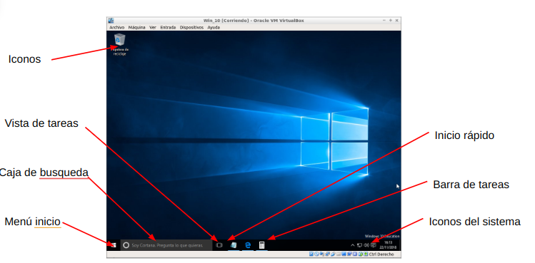

6. Configuración Básica en Windows
6.1. Versiones de Windows 10
Las versiones más comunes son:
- Home: Windows 10 Home es la edición estándar dirigida a usuarios domésticos. Incluye características esenciales como el menú Inicio, Cortana, el navegador Edge y la capacidad de crear escritorios virtuales.
- Pro: Windows 10 Pro está diseñado para usuarios empresariales y profesionales. Ofrece funcionalidades adicionales como el modo de escritorio remoto, cifrado de disco BitLocker y políticas de grupo.
- Enterprise: La edición Enterprise se centra en las necesidades de las grandes empresas. Incluye características de seguridad avanzadas, como Windows Defender Advanced Threat Protection (ATP) y actualizaciones a largo plazo.
- Education: Diseñada para instituciones educativas, Windows 10 Education comparte muchas características con la edición Enterprise. Los usuarios tienen acceso a herramientas de colaboración y administración simplificada.
Actualizaciones
Las actualizaciones son cruciales para mantener la seguridad y el rendimiento del sistema. Configura las actualizaciones automáticas para garantizar que el sistema esté siempre actualizado con las últimas correcciones de seguridad y mejoras de características.
6.2. Arranque y reinicio del Sistema
Para acceder a las opciones de arranque del sistema puedes reiniciar el sistema y presionando repetidamente la tecla F8 antes de que aparezca el logo de Windows. Para reiniciar el sistema puedes utilizar la combinación de teclas (Ctrl + Alt + Supr).
Algunas de las opciones de arranque más importantes son:
- Inicio Normal: Es la opción de arranque estándar y predeterminada. El sistema operativo se inicia normalmente cargando todos los controladores y servicios necesarios.
- Modo Seguro:Inicia Windows en un modo básico con un conjunto mínimo de controladores y servicios. Es útil para solucionar problemas relacionados con controladores o software de terceros que pueden estar interfiriendo con el arranque normal.
- Modo Seguro con funciones de red: Similar al Modo Seguro, pero con la capacidad de utilizar la conexión de red. Útil si necesitas descargar controladores o realizar actualizaciones mientras estás en modo seguro.
- Modo Seguro con símbolo del sistema: Inicia Windows en Modo Seguro pero con acceso al símbolo del sistema en lugar de la interfaz gráfica de usuario. Es útil para realizar tareas de mantenimiento y solución de problemas desde la línea de comandos.
- Última Configuración Buena Conocida: Inicia Windows utilizando la configuración que funcionó correctamente en la última ocasión en la que el sistema se inició correctamente. Útil si se han realizado cambios recientes que causan problemas de inicio.
- Reparación de Inicio: Intenta reparar cualquier problema de inicio automáticamente. Esta opción puede ser útil si el sistema operativo encuentra dificultades para arrancar. Cómo acceder: Disponible desde las opciones de inicio avanzado.
- Habilitar Modo de Prueba: Permite la instalación de controladores no firmados digitalmente. Es útil si estás desarrollando o utilizando software que requiere controladores que no están certificados por Microsoft.
- Inicio de Sesión con Depuración: Se utiliza para depurar problemas específicos relacionados con el arranque del sistema. Está diseñado para desarrolladores y profesionales de TI.
Estas opciones proporcionan flexibilidad para solucionar problemas, realizar tareas de mantenimiento y configurar el sistema según las necesidades específicas. Para acceder a muchas de estas opciones, puedes usar las configuraciones de inicio avanzado, que puedes encontrar en la Configuración de Windows o durante el proceso de arranque presionando combinaciones de teclas específicas.
6.3. Parada del Sistema
Hay diferentes formas en que puedes apagar, reiniciar o suspender tu sistema. Estas son algunas de las opciones más comunes en Windows 10:
- Apagar: Cierra todas las aplicaciones y servicios y apaga completamente el sistema.
- Reiniciar: Cierra todas las aplicaciones y servicios, apaga el sistema y luego lo vuelve a encender.
- Suspender: Pone el sistema en un estado de bajo consumo de energía, conservando el estado actual de las aplicaciones y documentos abiertos. Es útil para pausar rápidamente el trabajo sin cerrar las aplicaciones.
- Hibernar: Similar a la suspensión, pero guarda el estado actual en el disco y apaga completamente el sistema. Permite reanudar exactamente donde lo dejaste, incluso después de un apagado completo.
- Cerrar Sesión: Cierra la sesión del usuario actual sin apagar el sistema. Puedes iniciar sesión con otro usuario o volver a iniciar sesión más tarde.
- Cambiar de Usuario: Permite cambiar de un usuario a otro sin cerrar la sesión del usuario actual.
- Bloquear: Bloquea la pantalla, requiriendo la contraseña o el PIN para volver a acceder.
- Cerrar Sesión Rápida (Fast User Switching): Permite cambiar rápidamente entre diferentes cuentas de usuario sin cerrar la sesión de ninguna de ellas.
6.4. Administrador de Tareas
El Administrador de tareas de Windows es una herramienta integral que proporciona información detallada sobre el rendimiento del sistema, los procesos en ejecución, las aplicaciones en segundo plano y otros recursos del sistema. Para acceder al Administrador de tareas tienes varias opciones:
- Ctrl + Shift + Esc: Puedes abrir el Administrador de tareas rápidamente usando el atajo de teclado Ctrl + Shift + Esc.
- Ctrl + Alt + Supr: También puedes abrir el Administrador de tareas utilizando Ctrl + Alt + Supr y seleccionando "Administrador de tareas" desde el menú que aparece.
- Botón Derecho en la Barra de Tareas: Haz clic derecho en la barra de tareas y selecciona "Administrador de tareas" en el menú contextual.
- Botón de Inicio: Haz clic en el botón de Inicio, escribe "Administrador de tareas" y selecciona la aplicación en los resultados de la búsqueda.
Estas son algunas de las funciones básicas del Administrador de Tareas:
- Pestañas Principales:
- Procesos: Muestra una lista de todos los procesos en ejecución en el sistema, junto con información sobre el uso de la CPU, memoria y disco.
- Rendimiento: Proporciona una visión general del rendimiento del sistema, incluyendo el uso de la CPU, memoria, disco y red.
- Aplicaciones: Muestra las aplicaciones actualmente abiertas y permite finalizar tareas.
- Detalles de Procesos:
- Puedes hacer clic en la pestaña "Detalles" para obtener información más detallada sobre cada proceso en ejecución, incluyendo el uso de CPU y memoria.
- Finalizar Tarea:
- En la pestaña "Procesos" o "Detalles", puedes seleccionar un proceso y hacer clic en "Finalizar tarea" para cerrar una aplicación o proceso que no responde.
- Inicio de Nueva Tarea:
- En la pestaña "Archivo", puedes seleccionar "Ejecutar nueva tarea" para iniciar una nueva aplicación o proceso.
- Historial de Aplicaciones:
- En la pestaña "Aplicaciones", puedes ver las aplicaciones que están abiertas y cambiar entre ellas. También puedes finalizar tareas desde esta pestaña.
- Rendimiento en Tiempo Real:
- La pestaña "Rendimiento" ofrece información en tiempo real sobre el uso de recursos del sistema, presentado gráficamente para facilitar la comprensión.
- Usuarios:
- Muestra una lista de los usuarios conectados al sistema y sus respectivos procesos en ejecución.
- Iniciar o Detener Servicios:
- En la pestaña "Servicios", puedes ver y administrar los servicios del sistema, iniciar, detener o reiniciar servicios según sea necesario.
El Administrador de tareas es una herramienta esencial para monitorizar y gestionar el rendimiento del sistema y solucionar problemas relacionados con procesos en ejecución.
6.5. Escritorio
Los elementos básicos del escritorio en Windows 10:
- Iconos:
- Los iconos son accesos directos visuales a programas, archivos o carpetas en tu escritorio. Puedes hacer clic en ellos para abrir rápidamente los elementos correspondientes.
- Puedes organizar, mover o eliminar iconos en el escritorio para personalizar tu espacio de trabajo.
- Menú Inicio:
- El Menú Inicio es el punto de partida principal para acceder a programas, aplicaciones y configuraciones en Windows 10. Puedes abrirlo haciendo clic en el botón de inicio en la esquina inferior izquierda de la pantalla.
- Desde el Menú Inicio, puedes buscar y abrir aplicaciones, acceder a la configuración del sistema, y ver una lista de aplicaciones y documentos recientes.
- Caja de Búsqueda:
- La Caja de Búsqueda te permite buscar aplicaciones, archivos y configuraciones directamente desde el escritorio. Puedes acceder a ella haciendo clic en la barra de búsqueda en la barra de tareas o presionando la tecla de Windows y escribiendo directamente.
- Escribe palabras clave en la Caja de Búsqueda para encontrar rápidamente lo que necesitas en tu sistema.
- Vista de Tareas:
- La Vista de Tareas te muestra miniaturas de todas las aplicaciones y ventanas abiertas en tu sistema. Puedes acceder a ella haciendo clic en el ícono de Vista de Tareas en la barra de tareas.
- Puedes cambiar entre aplicaciones abiertas y escritorios virtuales, así como cerrar aplicaciones desde la Vista de Tareas.
- Inicio Rápido:
- El Inicio Rápido es una sección de la barra de tareas que contiene accesos directos a programas y aplicaciones que utilizas con frecuencia. Puedes personalizar estos accesos directos según tus preferencias.
- Arrastra y suelta aplicaciones en la sección de Inicio Rápido o elige "Anclar a la barra de tareas" desde el Menú Inicio.
- Barra de Tareas:
- La Barra de Tareas es una parte fundamental del escritorio de Windows 10. Contiene el Menú Inicio, la Caja de Búsqueda, accesos rápidos, iconos de aplicaciones en ejecución y la bandeja del sistema.
- Puedes cambiar el tamaño de la Barra de Tareas, anclar aplicaciones, y personalizar la posición y apariencia desde la configuración del sistema.
- Iconos del Sistema:
- Los iconos del sistema, como el reloj, el volumen y la red, se encuentran en la esquina derecha de la Barra de Tareas. Proporcionan acceso rápido a configuraciones y estados del sistema.
- Puedes hacer clic en estos iconos para ajustar la configuración de red, controlar el volumen, ver notificaciones y acceder a otras funciones del sistema.

Estos elementos básicos del escritorio en Windows 10 te brindan acceso rápido y fácil a las funciones y aplicaciones esenciales para tu experiencia informática diaria. Puedes personalizar muchos de estos elementos según tus preferencias y necesidades específicas.
6.6. Organización de las Carpetas
El Explorador de Archivos Es la herramienta principal para navegar y gestionar carpetas y archivos en Windows 10.Puedes abrir el Explorador de Archivos haciendo clic en el ícono del archivo en la barra de tareas o usando la combinación de teclas Win + E.
Conceptos clave relacionados con la organización de carpetas:
- Jerarquía de Carpetas:
- Unidades de Almacenamiento: Las unidades (C:, D:, etc.) representan los discos duros, particiones o unidades de almacenamiento conectadas a tu computadora.
- Carpetas Principales: Las carpetas principales en la raíz de una unidad incluyen "Usuarios" (donde se almacenan los perfiles de usuario) y "Windows" (que contiene archivos del sistema y programas).
- Usuarios: La carpeta "Usuarios" contiene perfiles individuales para cada usuario de la computadora. Dentro de cada perfil, encontrarás carpetas personales como "Documentos," "Descargas," y "Escritorio."
- Carpetas del Sistema: La carpeta "Windows" contiene archivos del sistema operativo y programas instalados. Es importante no realizar cambios aquí a menos que sepas exactamente lo que estás haciendo.
- Organización Interna de Carpetas:
- Documentos: La carpeta "Documentos" es el lugar predeterminado para guardar archivos de texto, hojas de cálculo y otros documentos.
- Descargas: "Descargas" es la carpeta predeterminada para guardar archivos que descargas desde internet.
- Escritorio: La carpeta "Escritorio" contiene accesos directos e íconos que se muestran en el escritorio. Es un lugar común para organizar archivos y accesos directos.
- Imágenes, Música, y Vídeos: Estas carpetas almacenan archivos multimedia correspondientes, facilitando la organización de contenido visual y auditivo.
- Otras Carpetas Importantes:
- ProgramData: Contiene datos compartidos por programas instalados en el sistema.
- AppData: Almacena datos de configuración y personalización específicos de cada usuario.
- Windows: Contiene archivos del sistema operativo y programas instalados.
- Consejos para la Organización:
- Crear Carpetas Personalizadas: Puedes crear carpetas adicionales para organizar tus archivos de manera más específica.
- Etiquetar y Describir Carpetas: Utiliza nombres descriptivos para las carpetas y, cuando sea necesario, añade descripciones para recordar el contenido.
- Usar Bibliotecas: Aprovecha las bibliotecas para agrupar contenido de diferentes ubicaciones sin tener que mover físicamente los archivos.
- Eliminar Archivos Innecesarios: Realiza limpiezas periódicas para eliminar archivos y carpetas que ya no necesitas.
- Realizar Copias de Seguridad: Guarda copias de seguridad de archivos importantes en unidades externas para prevenir pérdidas de datos.
6.7. Interfaz con el Usuario
La interfaz gráfica y PowerShell son dos formas distintas de interactuar con el sistema operativo Windows, y cada una tiene sus propias características y usos específicos. La interfaz gráfica es la forma tradicional y visual de interactuar con Windows, mientras que PowerShell es una herramienta más avanzada y potente para tareas administrativas y scripting en entornos de línea de comandos.
6.7.1. Interfaz Gráfica (GUI - Interfaz Gráfica de Usuario):
La interfaz gráfica de usuario es la forma visual y gráfica de interactuar con el sistema operativo. Incluye ventanas, íconos, menús, botones y otros elementos visuales que permiten a los usuarios realizar acciones de manera intuitiva.
6.7.1. PowerShell
PowerShell es una interfaz de línea de comandos y un entorno de scripting que proporciona acceso a funciones avanzadas y tareas de administración del sistema a través de comandos de texto.
PowerShell es un entorno de línea de comandos basado en texto. Los usuarios interactúan escribiendo y ejecutando comandos en lugar de hacer clic en elementos visuales.